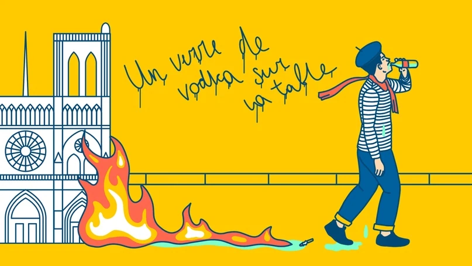

На этих выходных Данила Блюз попал в самое пекло международного конфликта. Сидя в баре, он стал свидетелем дебоша, который учинили пережравшие русской водки французы. Из обрывков его пьяных воспоминаний родилось эссе об иностранцах в России и судьбе спаленного пожаром Нотр-Дам.

Иностранец русского человека всегда веселит. Как какой-нибудь щеночек или младенец несмышленый. Вроде бы заграница, такие они там все умные в своем ООН сидят, нас поучают, как жить. Но в Россию приедут — и дураки дураками! По-человечьи ни слова сказать не могут, где что находится не понимают, водкой давятся, в бане в обморок падают — смех да и только. И с удовлетворением, по-доброму скажет какой-нибудь наш Васян захмелевшему англичанину: “Эх ты, чувырла, жизни в своей Англии не нюхал даже”, а тот ему сквозь сон: “Йес, йес” — и лицом в стол. И на короткий миг почувствует, что вот тут — Жизнь и он в самом ее эпицентре, а за бугром — все вздор, бутафория и глупость.
В минувшую пятницу зашел я как обычно в “Гибсон”, чтобы не утратить социальных навыков и, конечно же, выпить за Юрия Гагарина и Русский Космос. На сцене “Рэд Хэд Бэнд” орали что-то из старого “Ленинграда”, у сцены трясли жопами бабы, все это было окутано кальянным туманом, как фильтром в Instagram. Направляясь покурить, я увидел, что вокруг последнего столика (у входа и рядом с колонками) собрался консилиум из охранника и нескольких посетителей. Консилиум решал, что делать с пареньком, растянувшимся на красном двухместном диванчике. Парень лежал, скрестив руки на груди и закрыв глаза, но при всей умиротворенности его позы он неистово орал, широко раскрыв рот. “Умеют же некоторые отдыхать”, — подумал я, выйдя на свежий весенний воздух.
На лестнице у бара как обычно толпился народ. Через минуту двери распахнулись и я увидел, как охранник, а вместе с ним еще трое парней несут того самого крикуна — по человеку на каждую конечность. Сукин сын брыкался изо всех сил и, как одержимый дьяволом, лепетал на неизвестном наречии: “Же ля пю-пи! Амур-тужур! Келе ре тиль!” — что-то в таком духе. Я не знаток языков, но все же смекнул: парень беснуется на французском языке. Одержимого бросили на мраморное крыльцо, потом попробовали усадить на парапет, но он все время сползал на холодный и грязный пол.
— Не сиди на полу, чучело! — сказал ему охранник. — Простудишься! Понимаешь? Ферштейн?
В ответ француз опять начал лягаться и материться на своем лягушачьем наречии. Глаза его при этом были закрыты, он все еще спал.
— Мусье, простудишь себе ля жопА, сядь на ле парапет, — попытался втолковать какой-то знаток французского. Бесноватый в ответ только огрызался. — Эк тебя угораздило так нажраться?
— Я за ними сидел, они там водку заливали будь здоров! Как не в себя! Я еще думаю, ни фига себе французы, лудят похлеще наших алкашей! А они через пять минут уже в сопли.
— Да, этот чудила чуть колонку не опрокинул на себя. А потом разбежался и головой в стену врезался.
— Понравилась музыка, видать!
— Или наоборот — не понравилась.
— Чо мы с ним церемонимся? — сказал жирный отекший мужик с седым ежиком на голове. — Давайте его пнем, чтобы с лестницы скатился отсюда на хрен! Скажи-ка, дядя, ведь недаром Москва, спаленная пожаром, французу отдана?
— Что вы бедного французика запугали совсем? — возникла из толпы какая-то сердобольная баба с тонкой сигареткой в зубах. — Бедненький, совсем тебя тут это быдло задушило?
Баба погладила страдальца по поникшей голове. Тот в ответ, не открывая глаз, блеванул на пол между ног.
— Ой, фу, — отпрянула тут же бабенка. — Ну ты ваще евротрэш! Давайте, выпинывайте его с лестницы!
— Так, никто никого не выпинывает! — вмешался охранник. — Найдите кто-нибудь его друзей, пусть забирают пациента и валят отсюда.
Вскоре появился земляк перебравшего француза. Он накричал на своем смешном языке на невменяемого приятеля, замотал шею в шарф и повелел нести его друга к такси. Несмотря на то что собравшийся народ был настроен к смутьяну агрессивно, нашлась пара добрых душ: взяли под руки обмякшего Жан-Поля (так его прозвали в толпе), помогли ему спуститься по крутой и опасной лестнице и уложили в такси.
— Надо было все-таки спустить его с лестницы! — продолжал сетовать алкаш с седым ежиком на голове. — Припомнить ему, козлу, 1812 год!
— На международный конфликт нарываешься? — спросил охранник у ежика.
— Пусть только сунутся! Я им самолично Эйфелеву башню в очко засуну!
— Кому им-то? Башня же одна, а “их” много.
— На месте разберемся!
— А куда такси вызывали? До Парижа? Нет, серьезно, прикиньте, если его в наше село Париж увезли? Просыпается он утром с похмелюги и видит свою башню среди башкирских степей!
И вот, глядя на то, как полыхает Нотр-Дам, я вспомнил наших парижских забулдыг. Где они сейчас? Так и продолжают бухать на потеху русским? Или протрезвели и офигевают вместе со всем миром? Каково это — уехать из города, вернуться, а тут уже все просрали? Отстроят ли они заново Нотр-Дам? И если отстроят, то будет ли он таким же? Наверняка выйдет кривой новодел.
А может, скоро на место Макрона придет президент-мусульманин, как в том романе Уэльбека, и скажет: “Давайте проголосуем, нужен ли нам вообще этот собор — символ устаревшей Европы? Может, построим вместо него охренительно здоровую моднейшую мечеть?” А к тому времени в Париже все повально примут ислам и единогласно проголосуют за новую мечеть имени какого-нибудь Али ибн Абу Талиба.
Да, сегодня я бы, пожалуй, выпил с тем французишкой. И тоже, может, погладил бы его по голове.